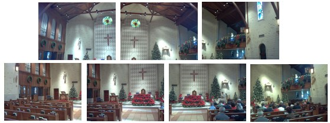
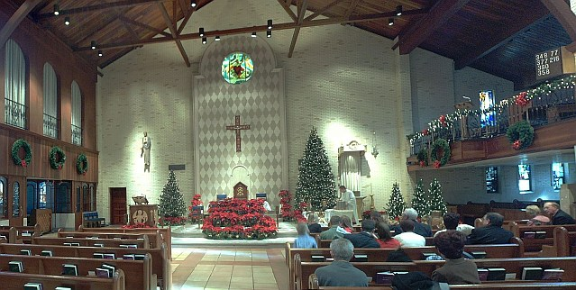

Karg Panorama Photos
These photos were manipulated using Panorama tools. I stitched together 2 or more pictures to get the results.
I started with these 7 images of the interior of a church at Christmas.

I used Hugin and Panorama Tools to stitch the 7 photos together.
Page created by The Karg Family
Photos Copyright (c) 2003-2004 by The Karg Family